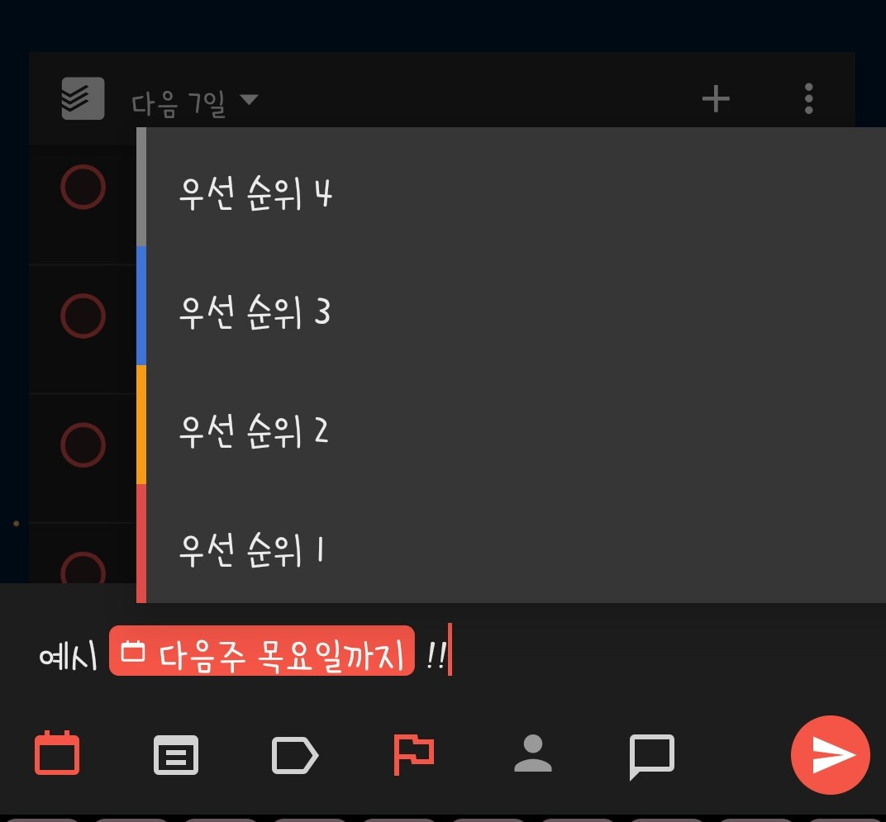
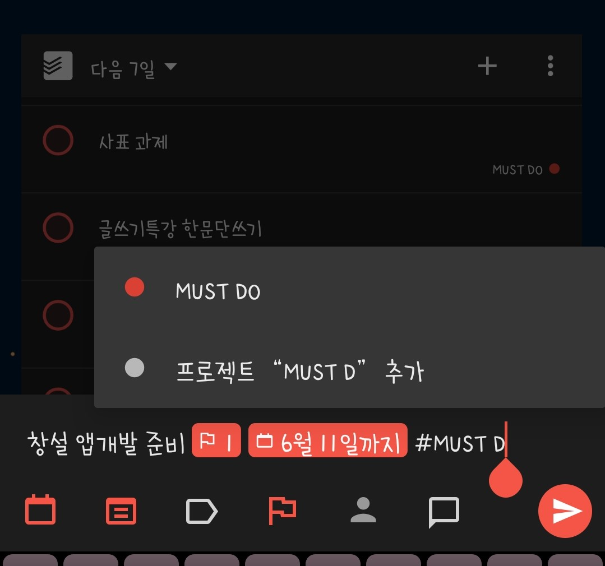
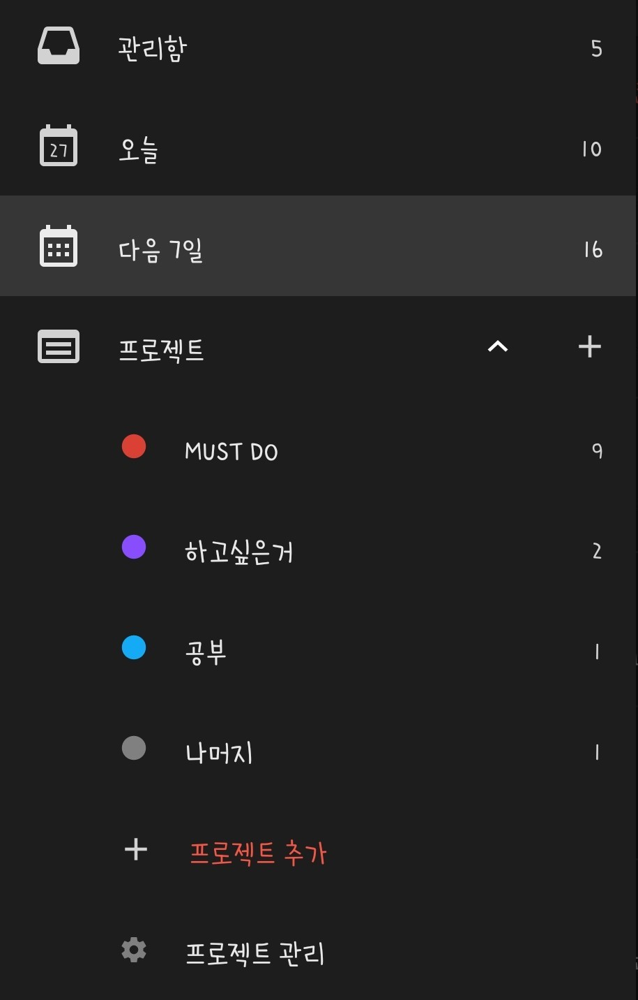

1. Todoist 앱의 편리성에 대한 소개
Todoist란?
todoist란 웹, store 앱, 모바일 앱 등 다양한 플랫폼에서 사용가능한 to-do 앱입니다.
3월 말 쯤에 있었던 졸업생 특강에서 추천해주셨던 앱이기도 합니다.
(개인적으로 느낀) 이 앱의 편리한 점들
1. 편리한 추가 - 추가시 내용과 함께 아래의 내용들을 쓰면 됩니다
- 느낌표 두 개와 숫자로 중요도 표시 (!!1 ~ !!4)
- 'OO월 OO일, OO마다, 다음주 O요일, OOO까지' 같은 글자를 쓰기만 해도 자동으로 일정이 설정됨
- '#(프로젝트이름)'으로 프로젝트에 편하게 추가
2. 프로젝트 기능
각 할 일들을 프로젝트에 추가하여 프로젝트별로 묶어볼 수 있다.


